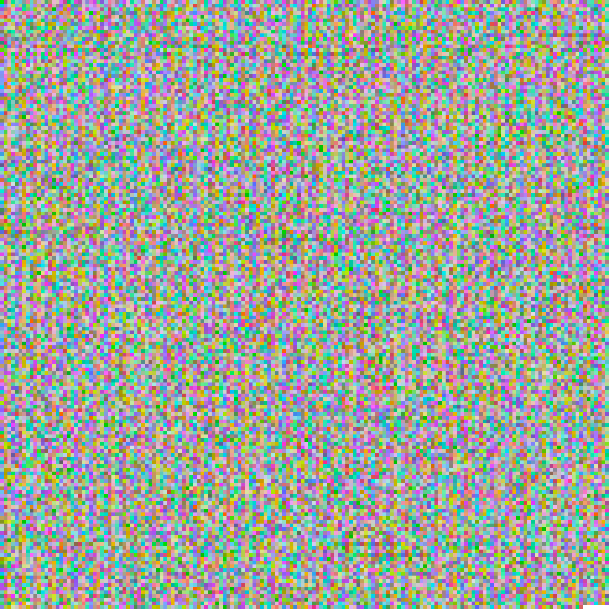
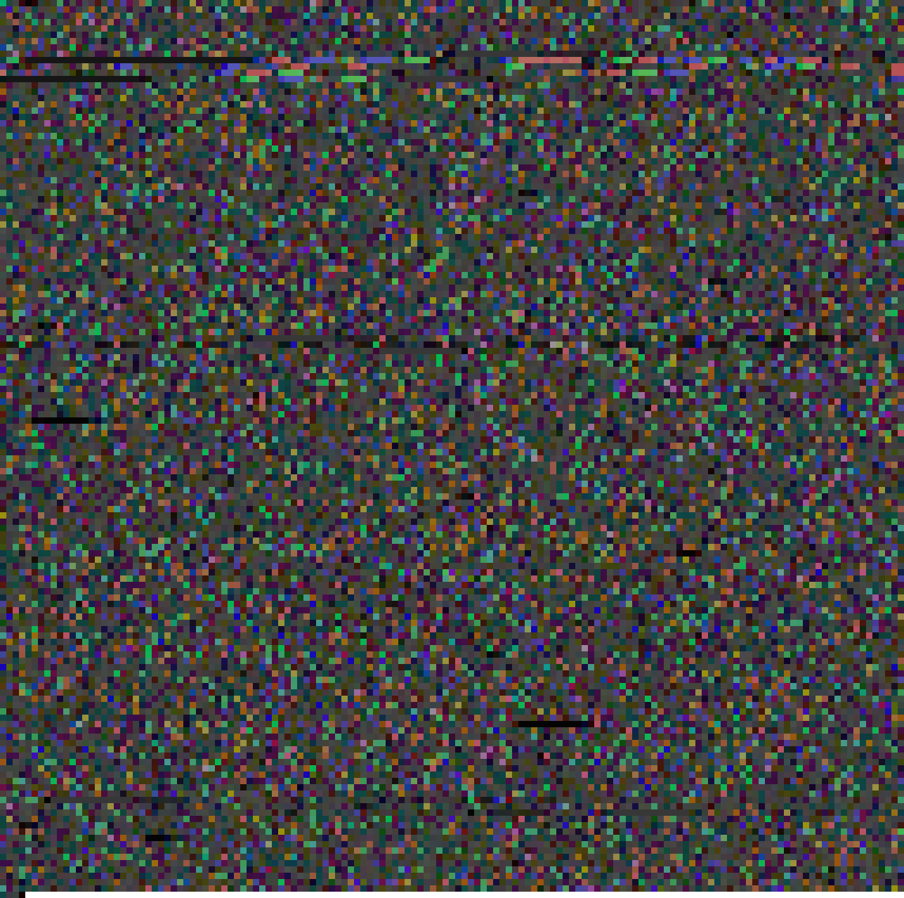
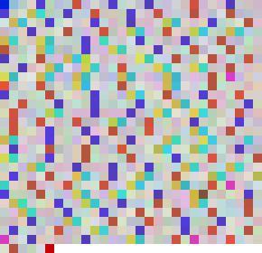

Sygnały wysyłane w próżnię
Czy po drugiej stronie jest ktoś, kto odbiera na tych samych częstotliwościach?
Bez mowy bylibyśmy niczym. Zatopieni w introspekcji, pozostalibyśmy zamkniętymi układami, bez możliwości kontaktu ze światem. Mowa jest rodzajem kodowania: w ruchach mięśni, w tchnieniach powietrza i artykulacji nadajemy kształt naszym myślom. Te harmoniczne oscylacje w niezrozumiały wciąż sposób przemierzają przestrzeń, by otworzyć przed innymi tajemnice naszego wnętrza. To jeden z najwyższych stopni uporządkowania wszechświata.
Jednak mowa to coś więcej niż drgania strun głosowych. Staje się nią wszystko, czym wpływamy na rzeczywistość: gest, ruch w czasoprzestrzeni, muzyka czy plastyka. Największa potęga często wynika z zaskakującej prostoty – mówi to istota, której geny budują zaledwie cztery elementarne cegiełki. Ten zbiór to romans z ową prostotą. To próba przetłumaczenia na język wizualny tego, co wymyka się definicjom; zapis dialogu między surową formą a kruchą ludzką psychiką.
Jesteśmy ograniczeni. Każdy z nas, zamknięty we własnej rzeczywistości, szuka punktów styku z tym, co transcendentne – tam, gdzie kończy się precyzyjna matematyka natury, a zaczyna lęk przed nieznanym. Gdzie technologia przestaje być tylko narzędziem, a staje się nowym sposobem naszego istnienia. Te grafiki to sygnały wysyłane w próżnię, by sprawdzić, czy po drugiej stronie jest ktoś, kto odbiera na tych samych częstotliwościach. To mój sposób na to, by w świecie pełnym danych, procedur i szumu, ocalić to, co najbardziej intymne i niewyrażalne.
Ekspozycja
Osiem prac artystycznych

(Nie)zwyciężony
Studium kruchości – lekarza, który może stać się ofiarą, i pacjenta, który ginie w chorobie.

Bicie Serca
Dowód na obecność. Fundament, na którym budujemy całą naszą rzeczywistość.

BRAF 1799
Historia o tym, jak precyzyjnie dostrojona maszyneria potrafi obrócić się przeciwko sobie.

Cremona
Lęk o przyszłość gatunku, gdy ludzka unikalność traci swój kształt.

Fibonacci 333
Medytacja nad zasadą antropiczną i matematycznym cudem wszechświata.

Leki
Mapa substancji, które codziennie modyfikują biologię milionów ludzi.

Przysięga Hipokratesa
Fascynacja postępem i drogą od ziół do precyzyjnej inżynierii genetycznej.

Pustka Pełna
Studium stanu, który nigdy nie nadejdzie: idealnego zera.